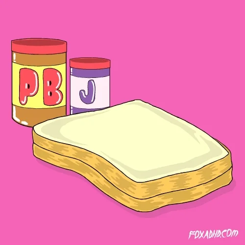

PB&J
Do you ever come home from a long day, starving, and want a meal that heals the soul? PB&J is the way to go!
With a low prep time, and minimal ingredients, this is a sure fire way to calm the mind and fill the stomach.
Ingredients
- 2x slices of bread
- 1Tbs peanut butter
- 1Tbs jelly
Directions
- Toast both slices of bread to desired crispiness
- Spread peanut butter on one slice of bread.
- Spread jelly on the remaining slice of bread.
- Place both slices of bread on top of each other, lining up all four corners. Cut the sandwich on a diagonal resulting in two similar triangular shapes.
- Enjoy your nourishing sandwich.

Energetic PB&J
You can read more about Traditional Peanut Butter and Jelly here